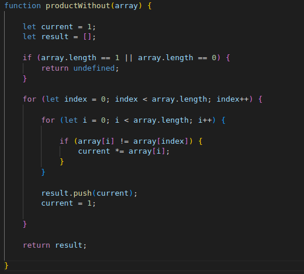

Good morning! Here's your coding interview problem for today.
This problem was asked by Uber.
Given an array of integers, return a new array such that each element at index i of the new array is the product of all the numbers in the original array except the one at i.
For example, if our input was [1, 2, 3, 4, 5], the expected output would be [120, 60, 40, 30, 24]. If our input was [3, 2, 1], the expected output would be [2, 3, 6].
Follow-up: what if you can't use division?
The function productWithout() can be tested in the console.
